읽는 법 · 파란 칸 화면에 보이는 단추 · 글자(누름) · 노란 칸 직접 칠 글 · 검은 상자 터미널 명령(복사해 붙여 넣기) · 빨간 점선 상자 화면 그림(빨간 테 = 누를 곳) · 확인 필요 아직 정해지지 않은 값
1AgentOps 열기 브라우저
할 일
http://127.0.0.1:18868 — AWS 서버(문서 11)를 터널로 보면 http://127.0.0.1:58868(내 컴퓨터 쪽 번호 · 문서 11 8번 표)
보일 것
Projects 화면 · '아직 Project가 없습니다'
막히면
서버에 띄웠는데 18868로 열었더니 Project가 이미 있거나 다른 화면 → 내 컴퓨터에 띄운 다른 스택이 열린 것 · 터널 번호 58868로 다시(문서 11 8번)
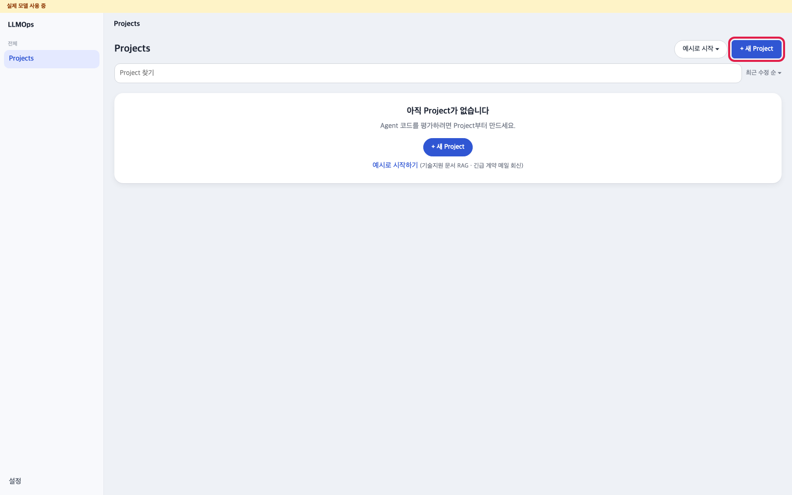
AgentOps 빈 Projects 화면 · 빨간 테: + 새 Project 단추
2프로젝트 만들기 AgentOps
할 일
+ 새 Project → Project 이름 칸에 C1-a15 정비 가이드(다른 이름도 됨 · 7번에서 똑같이 씀) → 나머지 칸은 그대로 → Project 만들기
보일 것
새 프로젝트 화면 · 'release를 등록하면 그래프가 보입니다'
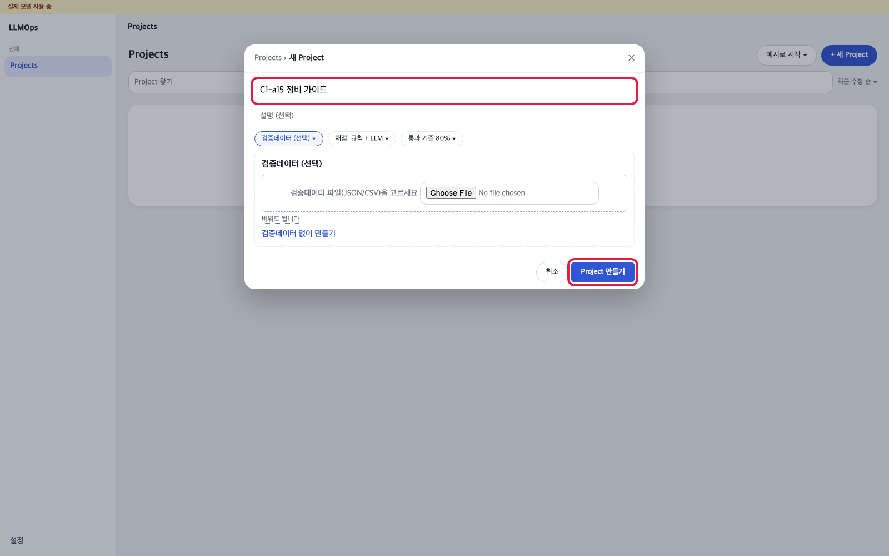
새 Project 창 · 빨간 테: 이름 칸 · Project 만들기
3Pack 올리기 = 첫 버전 등록 AgentOps
할 일
＋ release → 이름 칸에 V1(V 뒤에 숫자 — 배포 승인 창이 이 형식만 받음) → 로컬 폴더 경로에 /packs/first → 읽기
실행 설정 목록에서 execution/container.yaml → 등록
보일 것
위 탭 줄에 'V1 · 평가 중' · 가운데 Pack 흐름 그래프 · 띠에 '고정 흐름 확인 필요 ›'
막히면
'폴더 없음' → kg-init이 안 끝났음(문서 03 2번) · 나중에 배포 승인 창에서 422 → 버전 이름이 V 숫자 형식이 아님(V1 · V2 …로 다시 등록) · 실행 설정 목록이 비었음 → kg-init 다시(docker compose up -d kg-init)
알아 둘 것
/packs/first는 kg-init이 처음 켤 때 만들어 둔 첫 Pack 폴더입니다(컨테이너 안 경로). 실행 설정은 꼭 container.yaml을 고릅니다(다른 줄은 다른 환경용).
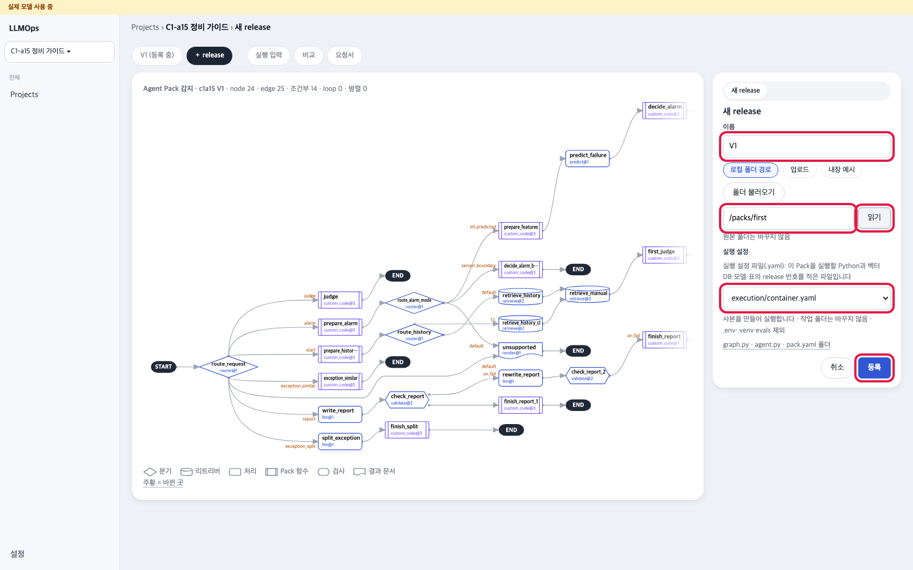
＋ release 창과 등록 뒤 그래프 · 빨간 테: 경로 칸 · 읽기 · 실행 설정 · 등록
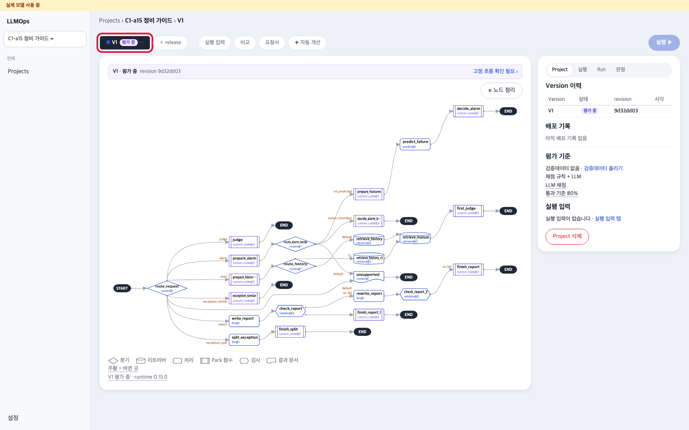
＋ release 창과 등록 뒤 그래프 · 빨간 테: 경로 칸 · 읽기 · 실행 설정 · 등록
4시험 묶음(평가 suite) 둘 올리기 AgentOps
할 일
오른쪽 평가 기준의 검증데이터 올리기 → 입력값 만들기의 평가 suite 탭
Pack release는 방금 등록한 V1 그대로 → evals/ 목록에서 c1a15-report-confirm-v4 → 등록(13 case · 보고서 쪽 확인)
같은 길로 한 번 더 → evals/ c1a15-order → 등록(27 case · 정확도 개선이 쓰는 묶음)
보일 것
'등록됨 · c1a15_report_confirm_v4 · … · 13 case' · '등록됨 · c1a15_order · … · 27 case' · 위 표에 평가 suite 두 줄
알아 둘 것
올리는 차례는 바뀌어도 됩니다 — 5번의 마지막 평가만 c1a15_order면 됩니다. 묶음들은 첫 Pack 안 evals/(컨테이너 안 /packs/first/evals)에 들어 있어 따로 받을 파일이 없습니다. 목록의 c1a15-alarm은 옛 기대값 형식이라 고르면 기대값이 0으로 나옵니다. 효율 시연(문서 08)에 쓰는 split · report-work 묶음은 08에서 올립니다. 파일 탭은 입력만 담은 JSON · CSV를 올리는 다른 길입니다.
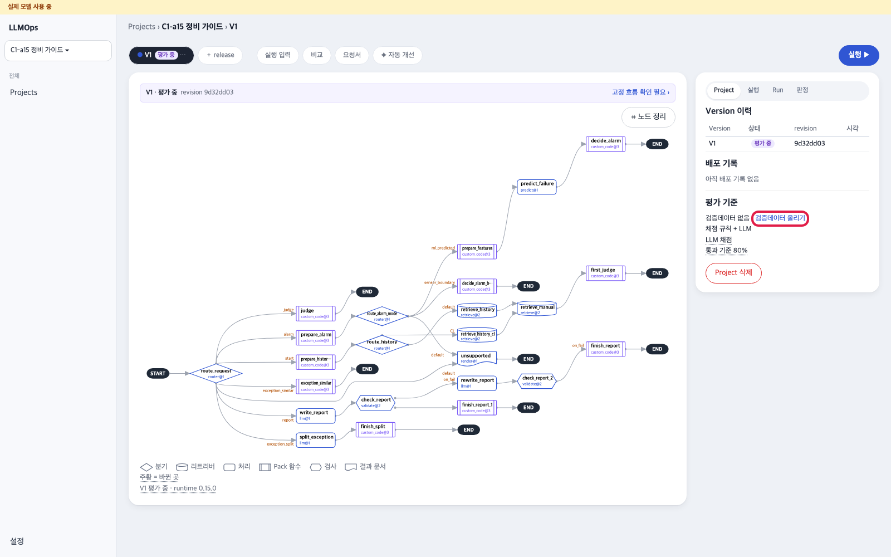
검증데이터 올리기 → 평가 suite · 빨간 테: 검증데이터 올리기 · evals/ 목록 · 등록
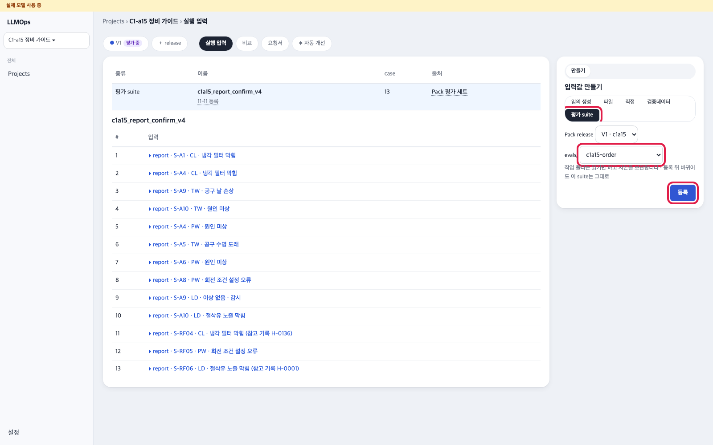
검증데이터 올리기 → 평가 suite · 빨간 테: 검증데이터 올리기 · evals/ 목록 · 등록
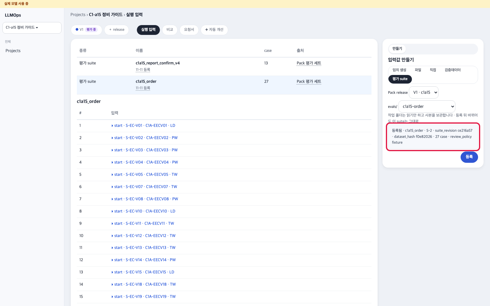
검증데이터 올리기 → 평가 suite · 빨간 테: 검증데이터 올리기 · evals/ 목록 · 등록
5첫 평가 Run — 마지막은 c1a15_order AgentOps
할 일
위 탭 줄의 V1 탭을 누른 상태에서 오른쪽 위 실행 ▶(이 단추는 버전 탭에서만 보임) → 오른쪽에 열린 '실행' 칸에서 실행 입력 '평가 suite · c1a15_report_confirm_v4 · 13건'을 고름(칸이 다른 묶음 — 예 c1a15_order — 으로 미리 골라져 열릴 수 있음 · 목록을 눌러 이 묶음으로 바꿈) → 실행 ▶을 한 번 더(약 1분)
이어서 같은 길로 실행 입력 '평가 suite · c1a15_order · 27건' → 실행 ▶ 한 번 더(약 2분) — 이것이 마지막 평가
모든 case 실패 → .env의 OPENAI_API_KEY 확인 · docker compose logs agentops --tail 50 · '주소 환경변수 OPENAI_BASE_URL가 없습니다' → agentops 이미지가 옛것 · docker compose build agentops 뒤 docker compose up -d
알아 둘 것
정확도 자동 개선(문서 07)은 운영 버전의 마지막 평가 묶음으로 돕니다. 그래서 마지막 평가는 반드시 c1a15_order입니다. 다른 묶음으로 평가했다면 c1a15_order로 한 번 더 합니다. 기대값 수는 실제 AI 답이라 Run마다 조금씩 다릅니다.
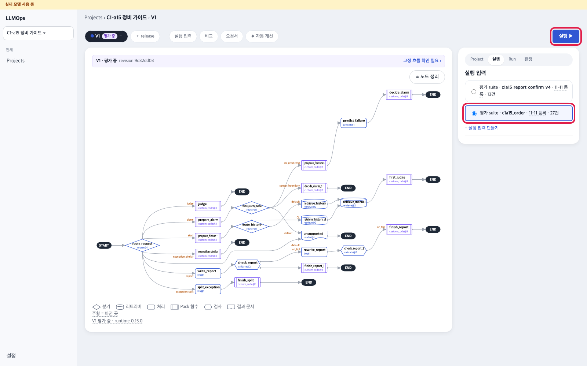
실행 입력 고르기와 첫 Run 결과 · 빨간 테: 실행 ▶ · 성공 칸 · 기대값 일치
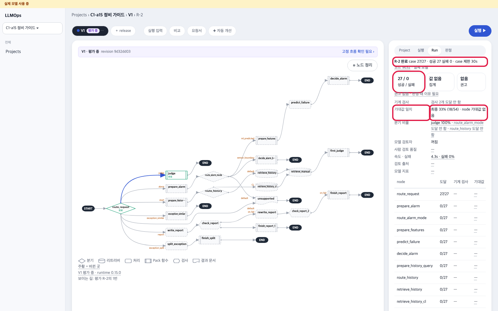
실행 입력 고르기와 첫 Run 결과 · 빨간 테: 실행 ▶ · 성공 칸 · 기대값 일치
6고정 흐름 확인 AgentOps
할 일
띠의 고정 흐름 확인 필요 › → 창의 항목 · 이 Pack에서 읽은 값 · 근거를 읽음
창 맨 아래 결정자 칸에 별명 ID(영문 소문자로 시작 · 소문자 · 숫자 · - · _ · 2 ~ 32자 · 예 owner-01) → 확인 → 화면 새로 고침(새로 고친 뒤 ✦ 자동 개선 화면이 열려 있으면 위 탭 V1을 눌러 띠를 봄)
보일 것
띠가 '고정 흐름 확인함 ›'
막히면
한글 · 실명을 넣으면 422(실명 · 연락처는 넣지 않음) → 별명 ID로 다시
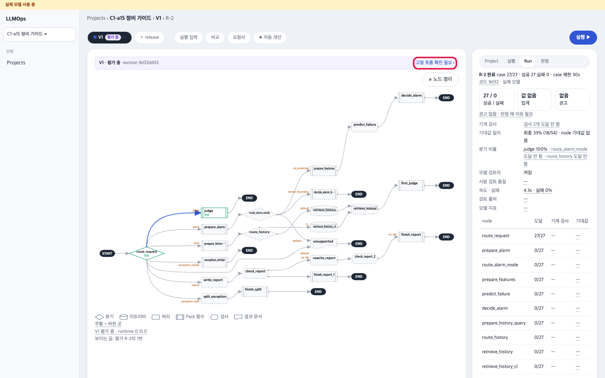
고정 흐름 띠 · 창 · 확인 뒤 · 빨간 테: 고정 흐름 확인 필요 › · 결정자 칸 · 확인
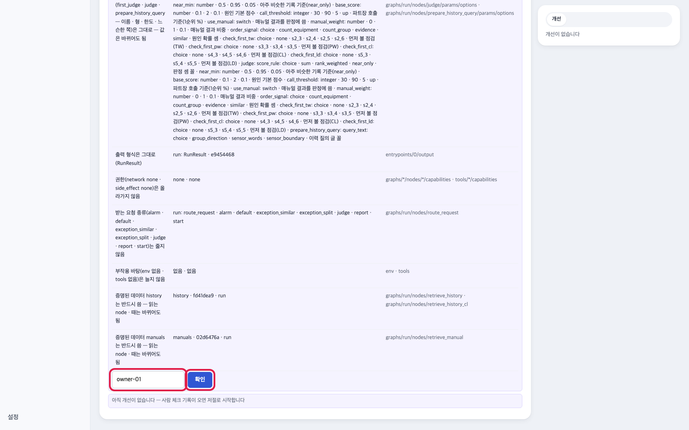
고정 흐름 띠 · 창 · 확인 뒤 · 빨간 테: 고정 흐름 확인 필요 › · 결정자 칸 · 확인
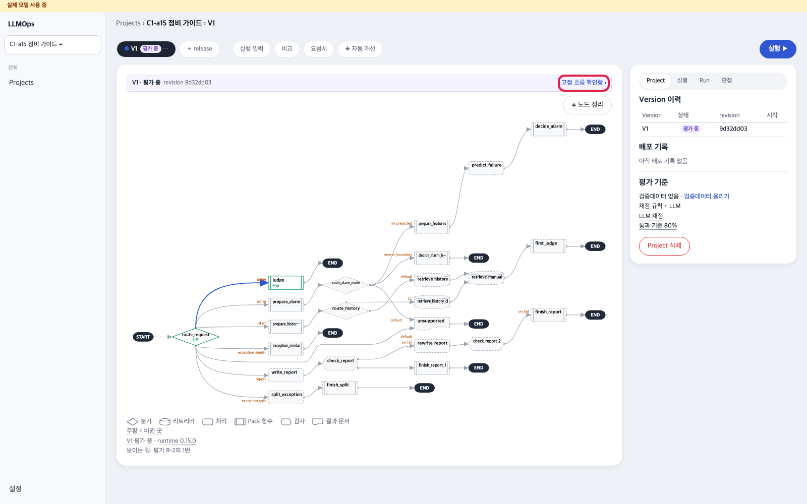
고정 흐름 띠 · 창 · 확인 뒤 · 빨간 테: 고정 흐름 확인 필요 › · 결정자 칸 · 확인
7운영 지정 + 운영 서버와 잇기(화면에 없는 두 가지를 한 줄로) 터미널
할 일
저장소 폴더에서 아래 한 줄 · 이름은 2번과 똑같이
대본이 하는 일: ① 지금 배포 서버가 돌리는 것을 첫 버전의 운영으로 기록 ② 운영 Run 채점 · 그래프 반영 연결을 .env.agentops에 씀 ③ agentops만 다시 켬(약 15초 · 다른 컨테이너는 그대로)
scripts/link-agentops.sh "C1-a15 정비 가이드"
출력 예
① 프로젝트 C1-a15 정비 가이드 = p-…
{"deployment_id": "c1a15@local", "pack_id": "c1a15", "pack_revision": "sha256:…", … "decision_id": 1}
② 첫 운영 지정: c1a15@local → /packs/first(태그 first)
③ 연결: 운영 Run 판정 · 그래프 반영 → 새 버전 켬 · agentops 다시 켬 — 화면을 새로 고치세요(http://127.0.0.1:18868)
보일 것
끝에 ③ 연결 줄 · 끝 코드 0 · 다시 돌려도 이미 한 것은 건너뜀
막히면
'이름이 …인 프로젝트가 0개입니다' → 화면의 이름과 한 글자라도 다름 · 2개 이상 → 같은 이름 프로젝트를 하나만 남김
알아 둘 것
이 단계가 알람보다 먼저입니다. 운영 지정 전에 알람을 띄우면 배포 서버가 deployment_not_registered(503)로 답합니다.
8운영 표시 확인 AgentOps
할 일
7번 대본이 끝나고 15 ~ 20초 뒤 화면 새로 고침(곧바로 고치면 agentops가 다시 켜지는 중이라 '평가 중' · '배포 기록 없음'으로 보임 · 그때는 조금 뒤 다시) → 첫 버전 탭 · 띠
보일 것
탭 'V1 · 운영' · 띠에 운영 Run 보기 · 오른쪽 배포 기록 한 줄
알아 둘 것
오른쪽 평가 기준 칸은 4번에서 묶음을 올렸어도 '검증데이터 없음 · 검증데이터 올리기'로 보일 수 있습니다. 올린 평가 suite는 4번의 위 표 두 줄로 확인합니다.
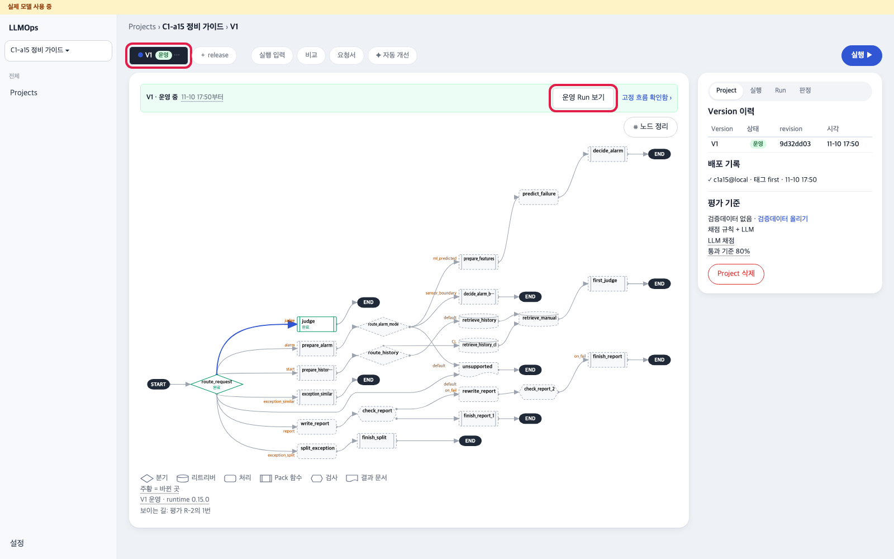
첫 버전 운영 중 · 빨간 테: 운영 표시 · 운영 Run 보기
다 됐는지
☐ 프로젝트 · 첫 버전 · 시험 묶음 둘 · 마지막 평가 Run = c1a15_order
☐ 고정 흐름 확인함
☐ link-agentops.sh 끝 코드 0 · 첫 버전 'V1 · 운영'
다음이 문서는 여기(8번)까지입니다. 새 버전은 아직 없습니다 — 새 버전 · 배포 승인 · 되돌리기 · 그래프 반영은 그것이 생기는 문서에서 처음부터 끝까지 합니다.
05 앱 쓰기 — 보고서 승인 → 그래프 반영 새 버전(보통 길 · 05 6번)
06 메인 — 예외 보고서 승인 → 관문 ○추출 ○간섭 ○유지 → 새 버전(06 6번)
07 정확도 — 자동 개선 ✦ 새 버전 → 배포 승인 네 단계 → 같은 알람 → 되돌리기 세 단계(07 6 ~ 8번)
08 효율 — 효율 개선 ✦ 새 버전 → 배포 승인 → 알람 한 건 → 되돌리기(08 7 ~ 9번)